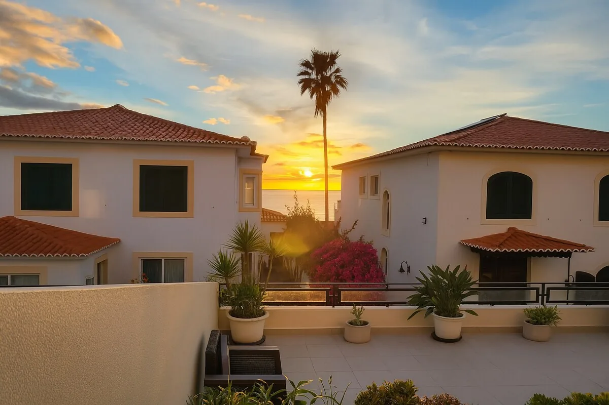
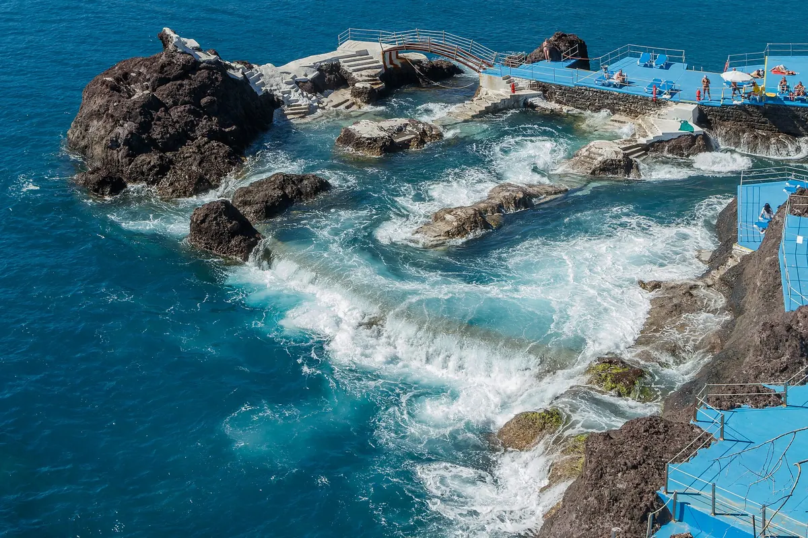
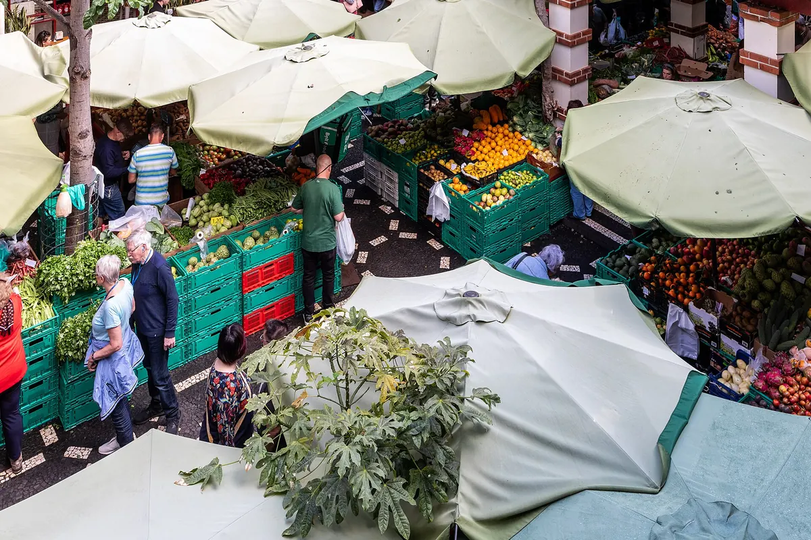
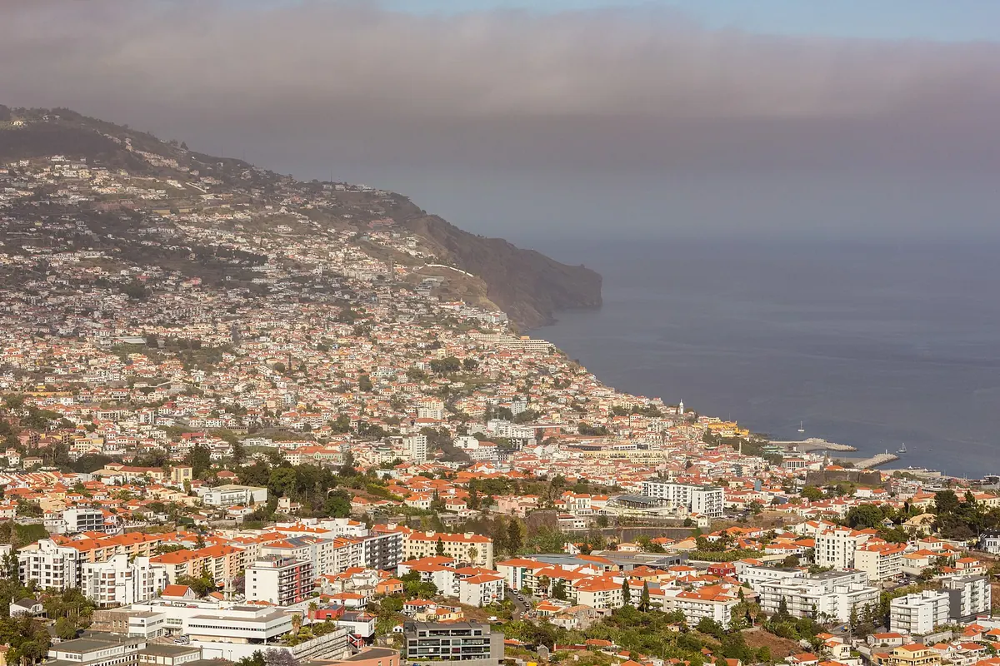

Jack5 years on Airbnb
Airbnb
Peaceful, clean, luxurious and relaxing. Couldnt have asked for a better place to stay. Made our visit to madeira feel comfortable and relaxed. Will be coming again! Thank you!
Funchal · Madeira
Both sleep three, both have two bedrooms and a terrace of their own. One looks over Funchal bay from Barreiros, the other sits on the cliff above Praia Formosa.


Barreiros, Funchal
Funchal sea view with an XL terrace.
from €118 a night · 7 nights minimum Airbnb's own price without Airbnb's fees. 20% to book, the rest on arrival



Above Praia Formosa, Funchal
A private terrace above Praia Formosa.
from €131 a night · 7 nights minimum Airbnb's own price without Airbnb's fees. 20% to book, the rest on arrival
Guest reviews
Each one written by a guest after their stay, on Airbnb, Booking.com or Vrbo. Nothing is edited; reviews in other languages show an English translation, with the guest's own words one tap away.
Peaceful, clean, luxurious and relaxing. Couldnt have asked for a better place to stay. Made our visit to madeira feel comfortable and relaxed. Will be coming again! Thank you!
A lovely base from which to explore Madeira, good Funchal bus service, natural pool and restaurant/supermarket access.
A peaceful place to retreat to after days out, sit on the terrace and listen to the waves crashing on the beach below.
Perfect stay
The apartment is amazing and very well-equipped; you truly have everything you need. The hosts were great as well, with very fast and easy communication. The terrace is beyond beautiful. The location is excellent—really close to the city center, yet you still have your own peaceful spot near the beach. There are plenty of markets and restaurants around, and if we ever come back to Madeira, we would definitely stay here again.
Less good: Everything was great.
Thank you so much for your wonderful feedback. It truly makes us happy to hear that your stay was perfect and that you enjoyed the apartment, the terrace, and the neighborhood.
You were fantastic guests, and communicating with you was really easy.
If you ever come back to Madeira, we’d be delighted to welcome you again.
Natalia & Hugo
Great place to stay, overlooking the entire bay, we saw the most beautiful New Year's Eve fireworks here!
很棒的住宿，可以俯瞰整个海湾，我们在这里看到了最美的跨年烟花！
The property was as described, very clean and comfortable. Kitchen had everything we needed, we were there for 2 weeks and cooked in a few times. Natalia was always quick to respond to our enquires. There is a convenience store right by the apartment and other shops about 15 mins walk. The buses are really easy to use and stops about 2 minutes walk from the building. The views are fantastic from the terrace and balcony.
Really nice place to stay and a super friendly host. Great location with lots of restaurants nearby, a lovely terrace, and easy private parking. We’d definitely stay here again!
Everything was good. Very nice people to stay with :)
We loved it, great apartment. Natalia and Hugo were super helpful. 10/10
We spent our summer vacation here with our young son, and the apartment was really great!
The great big terrace was our highlight. When we were in the apartment, we actually just spent our time there. We brought a small paddling pool for our son, so everyone got their money's worth. We can really recommend that. The large awning over the terrace was perfect for that (and everything else)! In the afternoon, the sun shines directly on the terrace, so we were able to find shade under the awning. So it was really pleasant. 😊☀️
The location is really great. You can walk to the beach quite quickly, and restaurants and shops are also within easy walking distance.
There are ceiling fans in every room except the bathroom, but no air conditioning. Therefore, it was very warm in the bedroom (September).
Parking was very easy thanks to the underground parking garage, the courtyard and nearby parking lots. And the washing machine was helpful, too! 😊
Wir haben unseren Sommerurlaub mit unserem kleinen Sohn hier verbracht und die Wohnung war wirklich top!
Die tolle große Terrasse war unser Highlight. Wenn wir in der Wohnung waren, dann haben wir die Zeit eigentlich nur dort verbracht. Wir hatten ein kleines Planschbecken für unseren Sohn dabei, sodass alle auf ihre Kosten kamen - das können wir echt empfehlen. Die große Markise über der Terrasse war dafür (und auch sonst) perfekt! Nachmittags scheint die Sonne direkt auf die Terrasse, sodass wir unter der Markise Schatten finden konnten. So war es richtig angenehm 😊☀️
Die Lage ist wirklich top. Man ist zu Fuß recht schnell am Strand und auch Restaurants und Einkaufsmöglichkeiten sind fußläufig gut erreichbar.
Es gibt Deckenventilatoren in jedem Zimmer außer im Bad, aber keine Klimaanlage. Im Schlafzimmer war es daher sehr warm (September).
Das Parken war durch die Tiefgarage, den Hof und nahegelegene Parkplätze sehr einfach. Und die Waschmaschine war auch hilfreich! 😊
Beautiful, quiet apartment with a beautiful terrace overlooking the sea. Has all the comforts. Close to the supermarket, the beach and lots of good restaurants. Great host, I recommend it!
Superbe appartement au calme avec une très belle terrasse vue sur mer. Dispose de tout le confort. Proche du supermarché, de la plage et de pleins de bons restaurant. Super hôte je recommande !
We had a really lovely stay in the apartment. The apartment was incredibly clean, tidy, and well-maintained, and everything worked as it should. We quickly felt at home and were very pleased with our stay. The host was also kind and helpful.
We highly recommend the apartment and would definitely like to stay here again! ☀️
Vi havde et rigtig dejligt ophold i lejligheden. Lejligheden var utrolig ren, pæn og velholdt, og alt fungerede, som det skulle. Vi følte os hurtigt hjemme og var meget tilfredse med vores ophold. Værten var også sød og hjælpsom.
Vi kan varmt anbefale lejligheden og ville bestemt gerne bo her igen! ☀️
We had a wonderful stay! The apartment was very clean, tidy, and well maintained, with everything we needed for a comfortable stay.
The host was very helpful and always available whenever we had any questions, which made everything easy and stress-free.
And the highlight was definitely the incredible ocean view — absolutely beautiful and something we enjoyed every single day. A great place to stay in Madeira, and we would happily come back again. Highly recommended!
The apartment is large, comfortable and has a very nice terrace. We ate there every day, especially breakfast. It faces west, so there is nice shade in the morning. There is no air conditioning, but there is a ceiling fan in every room. I do not stand the heat well, but the fans were perfect and we did not need air conditioning.
There are restaurants nearby, but we preferred the small, simple Portuguese restaurants in central Funchal. You can also walk to the sea, but like everywhere in Madeira, you have to go down and then climb back up, so be mentally prepared! 😊
The apartment is a little outside the centre, but buses run often and the stop is just outside the building.
The bathroom is a little dated and would benefit from a refresh. The hosts are very friendly, always available and gave us useful advice about the island.
What a beautiful place on an indescribably beautiful island.
The views were pristine, and the flat was clean, beautifully decorated and incredibly spacious — almost too big for the two of us, but we’re certainly not complaining! It was always just a short drive from great restaurants and the beautiful Funchal city centre.
If you have a car, don’t worry about parking — we always managed to find somewhere nearby.
Our only regret is that we didn’t get to spend more time in the flat and really take it all in, but Madeira simply has so much to see and do!
We really hope to return one day and once again sit on that balcony looking out over that incredible sea and city view.
Book this place — you won’t regret it!
Thank you both for a wonderful stay.
Luke and Maria.
Amazing location with a great view. We loved the place and stayed for a week. Natalia and Hugo are great hosts and communicate promptly about everything. We recommend car if you stay here. We highly recommend this lovely place.
Great stay in Madeira in this very nice, spacious, clean Airbnb with a great view of Funchal.
Our hosts were extremely thoughtful and helpful, and we were happy to communicate with them (in French!).
We also hired Chifbay for a fantastic boat trip and a memorable sunset.
Thanks again for this exceptional vacation!
Super séjour à Madère dans cet Airbnb très agréable, spacieux, propre et avec une super vue sur Funchal.
Nos hôtes ont été hyper attentionnés et serviables, et nous avons pu communiquer avec eux (en français !) avec grand plaisir.
Nous avons également fait appel aux services de Chifbay pour un tour en bateau fantastique, et un coucher de soleil mémorable.
Merci encore pour ces vacances exceptionnelles !
Beautiful location, spacious apartment and very nice view.
Mooie locatie, ruim appartement en zeer mooi uitzicht.
Natalia and Hugo were wonderful hosts. They communicated clearly and were very responsive. The apartment was ideally located in an area where the locals lived; exactly what we wanted. Yet it was easy access to walk into the Center of Funchal. Parking was a non issue at the location as there was always plenty of street parking available regardless of the time of day. The view was wonderful and we spent every morning enjoying coffee on the terrace overlooking the ocean. Great value. Would highly recommend.
Hugo & Natalia were great hosts, nice apartment, beautiful sea view and a nice central location.
Hugo & Natalia waren top hosts, mooi appartement, prachtig uitzicht op zee en een fijne centrale locatie.
A pleasant stay
The apartment is well-equipped and located in a very quiet area near the promenade.
Less good: The bathroom needs renovating.
Ein schöner Aufenthalt
Das Apartment ist gut ausgestattet und liegt sehr ruhig in der Nähe der Promenade.
Less good: Das Bad gehört renoviert.
We had a great stay
It was a very nice stay.
Great location, nice and quiet, second row to the sea, sound of the sea included, bus stop right outside, everything easily and quickly accessible. Many thanks to the truly lovely hosts for making the departure to the airport, which you organized, go so smoothly! We felt very comfortable.
Es war sein sehr schöner Aufenthalt.
Super Lage, schön ruhig, 2. Reihe zum Meer, Meeresrauschen inklusive, Bus vor der Tür, alles gut und schnell erreichbar. Vielen Dank an die wirklich sehr netten Gastgeber, dass auch die von euch organisierte Abreise zum Flughafen so gut geklappt hat! Wir haben uns sehr wohl gefühlt.
The apartment was conveniently located, right in the center, with plenty of parking options nearby. The view was absolutely splendid.
L’appartement était idéalement situé, en plein centre, avec de nombreuses possibilités de stationnement à proximité. La vue était absolument splendide.
Communication and the key handover were very good. Good location, close to a bus stop. A space in the garage for the car. Shops nearby. The flat is well equipped and very clean. The bed was comfortable.
Less good: The flat is very noisy, depending on who is in the flats around it. The flat is a little dated overall.
Kommunikation und Schlüsselübergabe war sehr gut Gute Lage, nähe Bushaltestelle Einstellhallenplatz fürs Auto Einkaufsmöglichkeiten in der Nähe Wohnung ist gut ausgestattet und sehr sauber Das Bett war bequem- Negativ zu erwähnen, ist die extreme hellhörigkeit der Wohnung, je nach Besetzung der umliegenden Wohnungen.- Die Wohnung ist insgesamt etwas in die Jahre gekommen.
We spent a week in this apartment and enjoyed it. Good location, nice view, excellent communication and all the things you might need. Definitely recommended.
Highlights include the terraces and the views. There are also small shops nearby that are very helpful.
Les points forts sont les terrasses et les points de vue. Il y a aussi les petits commerces à proximité qui dépannent bien.
I stayed at the property with a friend, and we had a wonderful vacation. The apartment is spacious and, with its huge terrace, offers a wonderful vacation feel with a sea view. Having our own garage parking space for the rental car was also super helpful. The only thing was that the house was very noisy.
Natalia welcomed us very warmly and was very easy to reach.
The beach, as well as several restaurants and the natural swimming pool, are within minutes walking distance. A shopping center and grocery stores are also within walking distance. We also enjoyed using the bus stop next door to get downtown.
Also, be sure to visit the Tradicional restaurant directly across from the house. The food is extremely good.
To eat on the outdoor terrace at the restaurant by the natural pool, you absolutely need to make a reservation in advance.
In downtown, we loved “Bar Number Two” (best poncha and caipirinha!!).
Ich war mit einer Freundin in der Unterkunft und wir hatten einen wunderschönen Urlaub. Die Wohnung ist geräumig und bietet mit der riesigen Terrasse ein wunderschönes Urlaubsfeeling mit Meerblick. Super hilfreich war auch der eigene Garagenstellplatz für den Mietwagen. Einzig das Haus war sehr hellhörig.
Natalia hat uns sehr herzlich empfangen und war sehr gut erreichbar.
Der Strand sowie einige Restaurants und das Naturbad sind in wenigen Minuten zu Fuß erreichbar. Ein Einkaufszentrum und Lebensmittelgeschäfte sind ebenfalls zu Fuß erreichbar. Wir haben auch gerne die Bushaltestelle nebenan genutzt, um in die Innenstadt zu kommen.
Besucht auch unbedingt das Tradicional Restaurant direkt gegenüber vom Haus. Das Essen ist extrem gut.
Um beim Restaurant am Naturbad auf der Außenterrasse zu Essen, muss man dringend vorher reservieren.
In der Innenstadt haben wir die "Bar Number Two" geliebt (bester Poncha und Caipirinha!!).
Pros - beautiful view from balcony, one sheltered from bad weather, there was always parking available. Natalia’s communication was very responsive and friendly.
Cons - we found mattress hard and uncomfortable and so used a spare duvet to make it softer, there was only one electric heater so difficult to dry things (we had bad weather so couldn’t dry things on balcony), at night the bedroom light bulbs dimly glowed even though switch was off (apparently might be common in Madeira)
Loved it here! Great to be away from the tourist hotspots and feel included in a lovely community. Great coffee shops etc!
Also got fit walking up and down the hill. Did occasionally resort to a bus or taxi - both very cheap!
Many Thanks for a great stay!
We spent almost two weeks in this unit and enjoyed it. A spacious, well maintained, one-bedroom apartment with an extra bed in an alcove to accommodate a third person if you wished. Located on the 6th floor in a family friendly residential apartment building a short drive from Funchal old town. The surrounding residential area has upscale villas and multiple housing. Lovely. Well equipped kitchen with a full size fridge-freezer and a dishwasher. Big screen TV with a few basic English-language channels and easy access to your Netflix account. Beautiful view overlooking Funchal harbour to watch the cruise ships come and go. Two big terraces for sitting out in warm weather. Note that this unit, like virtually all of Funchal, is in a hilly area and walking can be a challenge for some. There is a large grocery store about 500 metres away and smaller shops for groceries, veggies and bakery items about 200 metres away but all shopping requires walking up or down considerable hills if you wanted to go by foot. A rental car would be useful, but we managed well using Bolt/Uber that can be ordered by app within 2-5 minutes and is really inexpensive with nice cars and friendly drivers. We just booked them using the address of the pizza restaurant at the ground level of the building and the drivers knew where to go immediately.Dealing with the owners Natalia and Hugo was very easy. Immediate response and really helpful. We would stay again.
Reid and Karen were wonderful guests. Communication was easy and pleasant throughout their stay. They took great care of the apartment and left it clean and in very good condition.
It was a pleasure hosting them in Madeira, and I would happily recommend them to other hosts. They are always welcome back anytime!
Natalia 🌸
We had a lovely time at Natalia’s place over Christmas and New Year’s Eve. The terrace is the heart of the apartment, and we spent most of our time there.
The apartment is ideal for two people, but it also works well for three and has super fast internet, which allowed me to comfortably work remotely after the holidays.
Communication with Natalia was always great — she responded quickly and took care of everything. The only small note for people who enjoy cooking a lot: with the available equipment and the stove, cooking can be a bit challenging and may take a little longer. However, this is manageable.
Other than that, everything was wonderful, and I would definitely come back anytime. Thanks for hosting us!🌞🌸
Lovely flat with views of the sea and mountains. Everything needed was there. Would highly recommend!
Fast and friendly answers, always available even if you leave your key in the apartment :)
Clear check-in and check-out instructions. Great big apartment and beautiful terrace :) happy to come back next time
Schnelle und freundliche Antworten, immer erreichbar auch wenn man mal seinen Schlüssel in der Wohnung liegen lässt :)
Klare Anweisungen für Check-in und out. Tolle große Wohnung und wunderschöner Terasse :) gerne beim nächsten Mal wieder
Great place to stay, friendly hosts, good location and lovely outside space
Exceptionally clean, spacious and well equipped apartment. The balcony off the living room offers stunning views over Funchal to the ocean. The large outdoor terrace is a standout amenity.
Nice location, welcoming and helpful
The view
Less good: Air conditioning, and wifi on the balcony
Fijne locatie gastvrijheid en hulpvaardig
Uitzicht
Less good: Airco en wifi op het balkon
Thank you very much, Max, for your kind comments and for highlighting our hospitality and helpfulness 🌸. We are delighted that you enjoyed the comfort, cleanliness, and location of the apartment.
We were, however, a little surprised by the 7.5 rating for staff, as it seems somewhat inconsistent with your positive remarks. We always do our very best to be responsive and available to ensure our guests have a pleasant stay.
Your feedback is nevertheless very valuable to us, and it encourages us to keep improving. We would be very happy to welcome you back to Madeira in the future ✨🏝
Natalia & Hugo
Confortable and clean spaces, very sunny and well ventilated, quiet neighbourhood,
Less good: The bed mattress is too firm but that is my personal taste
A very practical location for seeing the island
Terrace with a sea view
Less good: Nothing
Emplacement très pratique pour la visite de l'île
Terrasse avec vue sur mer
Less good: Rien
Bonjour,
Merci infiniment pour votre gentil message et pour avoir tout laissé impeccable, c’est vraiment attentionné.
Je vous souhaite un excellent retour, et ce sera un vrai plaisir de vous revoir un jour sur l’île ! Natalia 🌸
The stay was wonderful as the apartment stays in a good location near the natural pools beach. It was very clean, we had
Location, the apartment and the terrace.
Less good: All was great!
I am more than delighted with my stay at Nathalia and Hugo's.
The apartment is in a great location, clean and spacious.
The place is quiet and peaceful.
The apartment is beautifully decorated, small touches of authenticity make up the charm of the apartment, which makes it warm.
Easy access, ideal with children or a person with reduced mobility.
I had a very nice week with my father.
I would highly recommend it, and I am in a hurry to return to feel at home again.
Thanks again 🌺
See you soon
Andréa and her Dad
Je suis plus que Ravie de mon séjour chez Nathalia et Hugo.
L’appartement est idéalement situé, propre et spacieux.
L’endroit est Calme et paisible.
L’appartement est magnifiquement décoré, des petites touche d’authenticité font tout le charme de l’appartement, cela je rends chaleureux.
Facile d’accès, idéal avec des enfants ou une personnalité à mobilité réduite.
J’ai passé une semaine très agréable avec mon père.
Je recommande vivement, et je suis pressé de revenir pour m’y sentir de nouveau chez moi.
Encore merci 🌺
À très vite
Andréa et son Papa
Spectacular terrace
Spectacular terrace with a sea view, a very spacious apartment with every comfort. The garage is very handy too.
Less good: If I had to find a flaw, perhaps the bathroom: the shower is almost impossible to set between hot and cold, and it is a bit worn overall, from the door itself to the shower tray.
Terrazzo spettacolare
Terrazzo spettacolare con vista mare,appartamento molto spazioso e con ogni comfort . Anche il Garage comodissimo.
Less good: Se dovessi trovare una pecca forse il bagno,doccia quasi impossibile da regolare tra acqua calda e fredda e un po’ rovinato in generale dalla porta stessa al piano doccia.
We had 10 wonderful days and were happy with the apartment. The location is very good. Communication and check-in were perfect. Thank you, Natalia!
Wir hatten 10 wunderschöne Tage, waren mit dem Apartment zufrieden. Die Lage ist sehr gut. Kommunikation und check in sind perfekt. Danke an Natalia!
Delicious
Super accommodation, clean, spacious, and with a huge XXL terrace.
Less good: Nothing
Heerlijk
Super accommodatie, schoon, ruim en met een enorm xxl terras.
Less good: Niets
Hi Bram 🌟
Thanks a ton for the awesome rating! You’re welcome back anytime🏝️
Cheers,
Natalia
Large terrace and beautiful views
Friendly hosts. A super comfortable and beautiful apartment. Convenient location
An apartment with a huge terrace looking out over the ocean
Less good: Everything was great
Приветливые хозяева.Супер комфортная и красивая квартира.Удобное расположение
Квартира с огромной террасой с видом на океан
Less good: Все было супер
Hi Ina🌟
Thank you so much for your wonderful comment! 🥰
We’re delighted that you enjoyed the warm welcome, the comfort of the apartment, and the terrace overlooking the ocean.
Knowing that “everything was great” truly warms our hearts. We look forward to hosting you again🏝️
Natalia 🌺
Excellent location, lots of space. A wonderful neighbourhood, full of places for lunch and dinner, and a supermarket too. A short hop from Funchal and the centre. The garage is great to use as well. Very kind owners, ready to help with anything.
Less good: It would be nice to have the flat cleaned at least once every 7 days.
Posizione dell'appartamento ottima, ampi spazi. Vicinato stupendo, molto fornito di locali per cenare e pranzare ma anche supermercato. A due passi da Funchal e dal centro. Inoltre ottimo per l'utilizzo del box auto. Proprietari molto gentili e disponibili per qualsiasi evenienza.
Less good: Sarebbe carino poter usufruire di un servizio di pulizia dell'appartamento minimo 1 volta ogni 7 giorni.
Ciao,
Grazie per il tuo feedback. Siamo felici che tu abbia apprezzato la posizione dell’appartamento, il quartiere e la vicinanza al centro di Funchal. È stato un piacere ospitarti.
Per quanto riguarda il servizio di pulizia durante il soggiorno, ci dispiace ci sia stato un malinteso. Se ce lo avessi richiesto, avremmo potuto organizzarlo senza problemi.
Il prezzo della prenotazione include infatti solo la pulizia finale dopo la partenza, oltre alla gestione della biancheria da letto e da bagno, per garantire un alto standard di pulizia a tutti gli ospiti.
Il servizio di pulizia durante il soggiorno non è incluso, ma può essere organizzato su richiesta anticipata.
Grazie ancora per il tuo soggiorno e per il tuo commento.
Cordiali saluti,
Natália & Hugo
The apartment was very large and clean, there was everything you needed. The large terrace was just great overlooking the sea and Funchal. The kitchen was well equipped and you could even do laundry. Communication with Natalia was great, she always responded quickly, we could figure out check-in times and it was super easy. Plenty of parking available in the area, a small kiosk downstairs in the house and a great cafeteria nearby. On foot, it was about 30 minutes to Funchal, we also took the bus. It was a really great stay.
Unfortunately, there were many barking dogs in the area (for which the hostess can do nothing), but with earplugs it was no problem at night.
Das Apartment war sehr groß und sauber, es war alles vorhanden was man brauchte. Die große Terrasse war einfach nur toll mit Blick auf das Meer und auf Funchal. Die Küche war toll ausgestattet und man konnte sogar die Wäsche waschen. Die Kommunikation mit Natalia war großartig, sie hat immer schnell geantwortet, Check in Zeiten konnten wir uns ausmachen und war super einfach. Genug Parkplätze in der Gegend vorhanden, ein kleiner Kiosk unten im Haus und gleich in der Nähe eine tolle Cafeteria. Zu Fuss waren es ca. 30 min nach Funchal, wir sind auch mit dem Bus gefahren. Es war ein wirklich toller Aufenthalt.
Leider waren in der Gegend viele bellende Hunde (wofür die Gastgeberin ja nichts kann), aber mit Ohrenstöpsel war es kein Problem in der Nacht.
Everything’s was good
The apartment was very clean and large. Equipped with everything you need. You had a great view of the sea and the mountains. Would book again anytime.
A place you have to discover
Madeira is, without any doubt, a place to discover. Natalia and Hugo's apartment is ideally placed, close to restaurants, shops, bus stops and the famous Lido promenade. The double terrace is more than pleasant, with a view of the ocean, and our hosts told us what to see and what to taste: all the must-dos. I recommend it without any hesitation!
une destination à découvrir absolument
Madère est sans aucune discussion une destination à découvrir. L'appartement de Natalia et Hugo est idéalement situé, proche des restaurants, des commerces, des arrêts de bus, de l'emblématique promenade du Lido. La double terrasse est plus qu'agréable avec une vue sur l'océan, et les hôtes nous ont indiqué les choses à découvrir, à goûter...les incontournables. Je recommande sans aucune hésitation!
Un grand merci à Aude pour son passage ! Elle a été une invitée adorable, respectueuse du lieu et de tout ce qui était mis à disposition. On sent qu’elle prend soin des choses comme si c’était chez elle, ce qui est vraiment précieux. Tout s’est passé avec simplicité et bienveillance. Ce serait un vrai plaisir de l’accueillir à nouveau !
All excellent
Very nice and good-value accommodation, everything we needed. Many thanks to Nathalia, Hugo and Arthur. We felt very much at home and would gladly come again.
Alles bestens
Sehr schöne und auch preiswerte Unterkunft, für unsere Zwecke völlig ausreichend. Besten Dank an Nathalia, Hugo und Arthur. Wir haben uns sehr wohl gefühlt und kommen auch gerne wieder
Vielen herzlichen Dank für Ihre nette Rückmeldung! Es freut uns sehr, dass Ihnen der Aufenthalt gefallen hat und die Unterkunft Ihren Bedürfnissen entsprochen hat. Nathalia, Hugo und Arthur bedanken sich herzlich – wir würden uns sehr freuen, Sie bald wieder bei uns begrüßen zu dürfen. Bis zum nächsten Mal!
What you get either way
Space for loungers and a table, facing the water. It is where you will spend the evening.
Tell us when you land. We hand over the keys in person and show you how everything works.
Perla do Oceano Suite is 164578/AL, and Varanda do Sol Suite is 164601/AL. Both are registered Alojamento Local.
Around the flats
Both flats are on the west side of Funchal, between the Lido and Praia Formosa. Everything below is a short bus, Bolt or Uber ride away.

The biggest beach in Funchal. Dark pebbles, lifeguards in summer and cafés on the sand. A flat seafront path runs west from here to Câmara de Lobos.

Sea pools cut into black lava rock, with a fish restaurant on top. You swim in calm water while the waves break just outside.

A seafront walk past gardens, cafés and the Lido and Ponta Gorda pools. Flat the whole way, and at its best around sunset.

A fishing village with painted boats pulled up on the slipway, a small bay, and poncha bars. Churchill came here to paint in 1950.

A glass floor at the edge of one of the highest sea cliffs in Europe, 580 metres straight down to the fields and the sea.

Mercado dos Lavradores sells exotic fruit, fish and flowers. Next to it, Rua de Santa Maria has its painted doors and many of the best restaurants in town.

Fifteen minutes in the air from the old town up to Monte, its gardens and its church. Come back down in a wicker toboggan, pushed by two men in straw hats.

A viewpoint above the city. The whole of Funchal bay in one look, and even better at night with the lights on.

We also run a private boat from Marina do Funchal. Along the coast to Cabo Girão, with a swim and paddle boards, just your group on board.
See the boat tripsPraia Formosa: Dietmar Rabich, CC BY-SA 4.0 · Doca do Cavacas pools: H. Zell, CC BY-SA 3.0 · The Lido promenade: Dr. Thomas Liptak, CC BY-SA 4.0 · Câmara de Lobos: Dietmar Rabich, CC BY-SA 4.0 · Cabo Girão skywalk: Ximonic (Simo Räsänen), CC BY-SA 4.0 · The market and the old town: Dietmar Rabich, CC BY-SA 4.0 · Cable car to Monte: Ввласенко, CC BY-SA 3.0 · Pico dos Barcelos: Diego Delso, CC BY-SA 4.0. From Wikimedia Commons, cropped. The boat photo is ours.
The same crew, on the water
Chifbay is our private boat out of Marina do Funchal, the same family, a few minutes from either apartment. One group at a time, never shared: Cabo Girão, a swim at Fajã dos Padres, or the coast at golden hour. Guests staying with us book it directly.
Two and a half or three hours down the west coast, with swimming and paddle boarding.
Two hours to Cabo Girão as the light goes, or two and a half on to Ribeira Brava.
Across every verified trip, with the same two skippers on board each time.
Questions
Here, on this site. Pick your dates on the apartment page and pay a 20% deposit by card through Stripe; the rest is paid when you arrive. The calendar shows what is actually free: it reads the same availability as Airbnb, Vrbo and Booking, so a night sold anywhere is closed everywhere.
Yes. You pay the same price as on Airbnb without Airbnb's fees, with the same weekly (5%) and monthly (10%) discounts. Only 20% is paid online to book; the rest is paid on arrival.
Three in each apartment. Both have two bedrooms, two beds and one bathroom.
Varanda do Sol comes with free parking on site. Perla do Oceano has free street parking nearby.
Natalia and Hugo, who live in Funchal. Both flats are Superhost-run on Airbnb, and you are met at the door on arrival.
No. Neither apartment has one, and both listings say so. We would rather write it here than leave you to find it in the small print.
,_Praia_Formosa_--_2025_--_0656.jpg){kind=link}

_2.jpg){kind=link}
,_Porto_de_C%C3%A2mara_de_Lobos_--_2025_--_1901.jpg){kind=link}

,_Mercado_dos_Lavradores_--_2025_--_0995.jpg){kind=link}